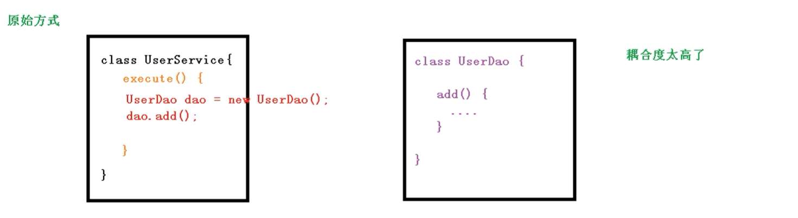
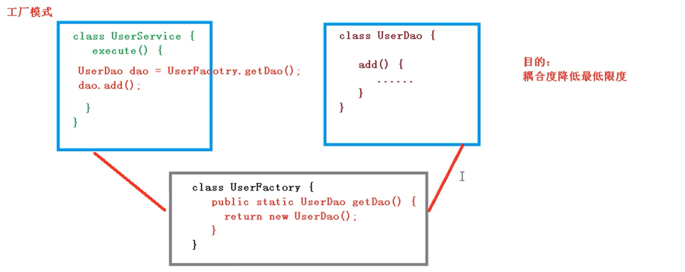
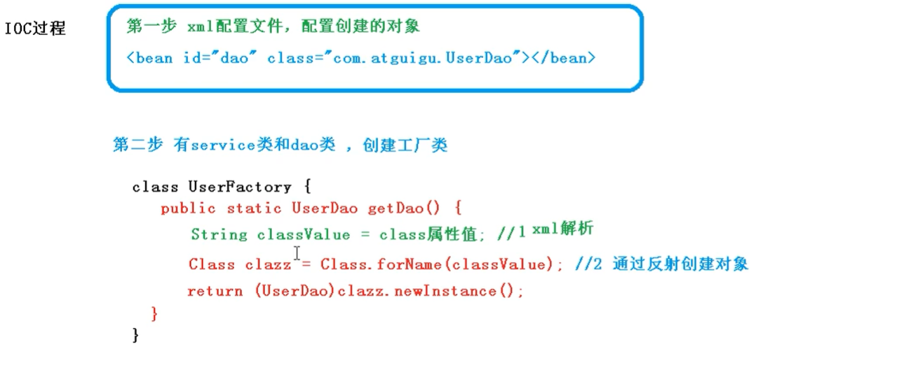

<!DOCTYPE html>


<html lang="zh-Hans">
  

    <head>
      <meta charset="utf-8" />
        
      <meta name="description" content="Technical output and problem solving record" />
      
      <meta
        name="viewport"
        content="width=device-width, initial-scale=1, maximum-scale=1"
      />
      <title>初识Spring中的IOC容器01 |  Tunan`s Blog</title>
  <meta name="generator" content="hexo-theme-ayer">
      
      <link rel="shortcut icon" href="/favicon.ico" />
       
<link rel="stylesheet" href="/dist/main.css">

      <link
        rel="stylesheet"
        href="https://cdn.jsdelivr.net/gh/Shen-Yu/cdn/css/remixicon.min.css"
      />
      
<link rel="stylesheet" href="/css/custom.css">
 
      <script src="https://cdn.jsdelivr.net/npm/pace-js@1.0.2/pace.min.js"></script>
       
 

      <link
        rel="stylesheet"
        href="https://cdn.jsdelivr.net/npm/@sweetalert2/theme-bulma@5.0.1/bulma.min.css"
      />
      <script src="https://cdn.jsdelivr.net/npm/sweetalert2@11.0.19/dist/sweetalert2.min.js"></script>

      <!-- mermaid -->
      
      <style>
        .swal2-styled.swal2-confirm {
          font-size: 1.6rem;
        }
      </style>
    </head>
  </html>
</html>


<body>
  <div id="app">
    
      
    <main class="content on">
      <section class="outer">
  <article
  id="post-详解Spring中的IOC容器"
  class="article article-type-post"
  itemscope
  itemprop="blogPost"
  data-scroll-reveal
>
  <div class="article-inner">
    
    <header class="article-header">
       
<h1 class="article-title sea-center" style="border-left:0" itemprop="name">
  初识Spring中的IOC容器01
</h1>
 

      
    </header>
     
    <div class="article-meta">
      <a href="/2021/09/17/%E8%AF%A6%E8%A7%A3Spring%E4%B8%AD%E7%9A%84IOC%E5%AE%B9%E5%99%A8/" class="article-date">
  <time datetime="2021-09-17T06:26:33.000Z" itemprop="datePublished">2021-09-17</time>
</a> 
  <div class="article-category">
    <a class="article-category-link" href="/categories/%E6%BA%90%E7%A0%81%E5%89%96%E6%9E%90/">源码剖析</a>
  </div>
  
<div class="word_count">
    <span class="post-time">
        <span class="post-meta-item-icon">
            <i class="ri-quill-pen-line"></i>
            <span class="post-meta-item-text"> Word count:</span>
            <span class="post-count">3.4k</span>
        </span>
    </span>

    <span class="post-time">
        &nbsp; | &nbsp;
        <span class="post-meta-item-icon">
            <i class="ri-book-open-line"></i>
            <span class="post-meta-item-text"> Reading time≈</span>
            <span class="post-count">16 min</span>
        </span>
    </span>
</div>
 
    </div>
      
    <div class="tocbot"></div>


  
    <div class="article-entry" itemprop="articleBody">
       
  <h1 id="IOC容器"><a href="#IOC容器" class="headerlink" title="IOC容器"></a>IOC容器</h1><p>控制反转（Inversion of Control，缩写为IoC），是面向对象编程中的一种设计原则，可以用来减低计算机代码之间的耦合度。其中最常见的方式叫做依赖注入（Dependency Injection，简称DI），还有一种方式叫“依赖查找”（Dependency Lookup）。通过控制反转，对象在被创建的时候，由一个调控系统内所有对象的外界实体将其所依赖的对象的引用传递给它。也可以说，依赖被注入到对象中。<span id="more"></span></p>
<p>把对象的创建和调用的过程，交给Spring管理，降低代码的耦合度。</p>
<h2 id="底层原理"><a href="#底层原理" class="headerlink" title="底层原理"></a>底层原理</h2><p></p>
<p></p>
<p></p>
<h2 id="IOC接口（BeanFactory）"><a href="#IOC接口（BeanFactory）" class="headerlink" title="IOC接口（BeanFactory）"></a>IOC接口（BeanFactory）</h2><ul>
<li>ioc思想基于IOC容器完成，ioc容器底层就是对象工厂。</li>
<li>Spring提供了IOC容器实现的两种方式：两个接口，<br>BeanFactory：IOC容器基本实现，是spring内部使用接口，不提供开发人员使用。加载配置文件时不会创建对象，使用对象时才会创建对象（懒汉式加载对象）。<br>ApplicationContext：BeanFatory的子接口，提供更多更强大的功能，一般供开发人员进行使用。加载配置文件时就创建对象（饥汉式加载对象）。</li>
<li>ApplicationContext接口实现类<br>FileSystemXmlApplicationContext(“盘符路径（绝对路径）”)<br>ClassPathXmlApplicationContext(“src目录下类路径”)</li>
</ul>
<h2 id="IOC操作Bean管理"><a href="#IOC操作Bean管理" class="headerlink" title="IOC操作Bean管理"></a>IOC操作Bean管理</h2><h3 id="什么是Bean管理"><a href="#什么是Bean管理" class="headerlink" title="什么是Bean管理"></a>什么是Bean管理</h3><p>Bean 管理指的是两个操作</p>
<ul>
<li>Spring 创建对象</li>
<li>Spring 注入属性</li>
</ul>
<h3 id="基于XML实现"><a href="#基于XML实现" class="headerlink" title="基于XML实现"></a>基于XML实现</h3><h4 id="基于xml方式创建对象"><a href="#基于xml方式创建对象" class="headerlink" title="基于xml方式创建对象"></a>基于xml方式创建对象</h4><p>(1) 在Spring配置文件中，使用Bean标签，标签里面添加对应属性，就可以实现对应对象创建<br>(2) 在Bean标签有很多属性，常用的属性：id、class、name</p>
<p>(3) 创建对象的时候，默认也是执行无参数构造方法</p>
<pre><code class="xml">    &lt;!--配置User对象创建--&gt;
    &lt;bean id=&quot;user&quot; class=&quot;com.spring5.User&quot;&gt;&lt;/bean&gt;
</code></pre>
<h4 id="基于xml方式注入属性"><a href="#基于xml方式注入属性" class="headerlink" title="基于xml方式注入属性"></a>基于xml方式注入属性</h4><p>DI：依赖注入，就是注入属性</p>
<ul>
<li>第一种注入方式：使用set方法进行注入</li>
</ul>
<pre><code class="xml">    &lt;!--set方法注入属性--&gt;
    &lt;bean id=&quot;book&quot; class=&quot;com.spring5.Book&quot;&gt;
    &lt;!--使用property完成属性注入
        name：类里面属性名称
        value：向属性注入的值
    --&gt;
        &lt;property name=&quot;bname&quot; value=&quot;WeiSanJin&quot;&gt;&lt;/property&gt;
        &lt;property name=&quot;bauthor&quot; value=&quot;WeiSanJin&quot;&gt;&lt;/property&gt;
    &lt;/bean&gt;
</code></pre>
<ul>
<li>使用有参构造方式进行注入</li>
</ul>
<pre><code class="xml">    &lt;bean id=&quot;orders&quot; class=&quot;com.spring5.Orders&quot;&gt;
        &lt;constructor-arg name=&quot;oname&quot; value=&quot;WeiSanJin&quot;&gt;&lt;/constructor-arg&gt;
        &lt;constructor-arg name=&quot;address&quot; value=&quot;WeiSanJin&quot;&gt;&lt;/constructor-arg&gt;
    &lt;/bean&gt;
</code></pre>
<p>测试</p>
<pre><code class="java"> @Test
    public void TestOrder()&#123;
        //1.加载Spring配置文件
        ApplicationContext context = new ClassPathXmlApplicationContext(&quot;base1.xml&quot;);

        //2.获取配置创建的对象
        Orders orders = context.getBean(&quot;orders&quot;,Orders.class);

        System.out.println(orders.toString());
    &#125;
</code></pre>
<h4 id="外部Bean注入"><a href="#外部Bean注入" class="headerlink" title="外部Bean注入"></a>外部Bean注入</h4><p>(1) 创建两个类service类和dao类</p>
<p>(2) 在service调用dao类的方法</p>
<p>(3) 在spring配置文件中进行配置</p>
<pre><code class="xml">public interface UserDao &#123;
    public void updata();
&#125;

public class UserDaoImpl implements UserDao&#123;

    @Override
    public void updata() &#123;
        System.out.println(&quot;dao updata.......&quot;);
    &#125;
&#125;

public class UserService &#123;
    // 创建UserDao类型属性，生成set方法
    private UserDao userDao;
    public void setUserDao(UserDao userDao) &#123;
        this.userDao = userDao;
    &#125;

    public void add()&#123;
        System.out.println(&quot;service add......&quot;);
        //原理注入方式
        //UserDao userDao = new UserDaoImpl();
        //userDao.updata();
    &#125;
&#125;

// 第二步写配置文件xml文件
// service和dao对象创建
    &lt;bean id=&quot;userService&quot; class=&quot;com.spring5.service.UserService&quot;&gt;
        &lt;!-- 注入UserDao对象 
             name属性：类里面属性名称
             ref属性：创建userDao对象bean标签id值
        --&gt;
        &lt;property name=&quot;userDao&quot; ref=&quot;userDaoImpl&quot;&gt;&lt;/property&gt;
    &lt;/bean&gt;
    // 配置dao对象
    &lt;bean id=&quot;userDaoImpl&quot; class=&quot;com.spring5.dao.UserDaoImpl&quot;&gt;&lt;/bean&gt;
</code></pre>
<h4 id="级联赋值"><a href="#级联赋值" class="headerlink" title="级联赋值"></a>级联赋值</h4><pre><code class="xml">&lt;!--级联赋值--&gt;
&lt;bean id=&quot;emp&quot; class=&quot;com.spring5.bean.Emp&quot;&gt;
    &lt;!--设置两个普通属性--&gt;
    &lt;property name=&quot;ename&quot; value=&quot;WeiSanJin&quot;&gt;&lt;/property&gt;
    &lt;property name=&quot;genfer&quot; value=&quot;WeiSanJin&quot;&gt;&lt;/property&gt;
    &lt;property name=&quot;dept&quot;&gt;
        &lt;bean id=&quot;dept&quot; class=&quot;com.spring5.bean.Dept&quot;&gt;
            &lt;property name=&quot;dname&quot; value=&quot;保安部&quot;&gt;&lt;/property&gt;
        &lt;/bean&gt;
    &lt;/property&gt;
&lt;/bean&gt;

&lt;bean id=&quot;emp&quot; class=&quot;com.spring5.bean.Emp&quot;&gt;
    &lt;!--设置两个普通属性--&gt;
    &lt;property name=&quot;ename&quot; value=&quot;WeiSanJin&quot;&gt;&lt;/property&gt;
    &lt;property name=&quot;genfer&quot; value=&quot;WeiSanJin&quot;&gt;&lt;/property&gt;
    &lt;property name=&quot;dept&quot;&gt;
        &lt;bean id=&quot;dept&quot; class=&quot;com.spring5.bean.Dept&quot;&gt;
            &lt;property name=&quot;dname&quot; value=&quot;保安部&quot;&gt;&lt;/property&gt;
        &lt;/bean&gt;
    &lt;/property&gt;
&lt;/bean&gt;
</code></pre>
<h4 id="注入集合属性"><a href="#注入集合属性" class="headerlink" title="注入集合属性"></a>注入集合属性</h4><pre><code class="xml">&lt;!--1. 集合类型属性注入--&gt;
&lt;bean id=&quot;stu&quot; class=&quot;com.spring5.collectionytpe.Stu&quot;&gt;
    &lt;!--数组类型属性注入 --&gt;
    &lt;property name=&quot;courses&quot;&gt;
        &lt;array&gt;
            &lt;value&gt;Java课程&lt;/value&gt;
            &lt;value&gt;数据库课程&lt;/value&gt;
        &lt;/array&gt;
    &lt;/property&gt;
    &lt;!--list类型属性注入 --&gt;
    &lt;property name=&quot;list&quot;&gt;
        &lt;list&gt;
            &lt;value&gt;张三&lt;/value&gt;
            &lt;value&gt;小三&lt;/value&gt;
        &lt;/list&gt;
    &lt;/property&gt;
    &lt;!--map类型属性注入 --&gt;
    &lt;property name=&quot;maps&quot;&gt;
        &lt;map&gt;
            &lt;entry key=&quot;Java&quot; value=&quot;java&quot;&gt;&lt;/entry&gt;
            &lt;entry key=&quot;PHP&quot; value=&quot;php&quot;&gt;&lt;/entry&gt;
        &lt;/map&gt;
    &lt;/property&gt;
    &lt;!--set类型属性注入 --&gt;
    &lt;property name=&quot;sets&quot;&gt;
        &lt;set&gt;
            &lt;value&gt;Mysql&lt;/value&gt;
            &lt;value&gt;Redis&lt;/value&gt;
        &lt;/set&gt;
    &lt;/property&gt;
&lt;/bean&gt;
</code></pre>
<h4 id="提取诸如集合等部分"><a href="#提取诸如集合等部分" class="headerlink" title="提取诸如集合等部分"></a>提取诸如集合等部分</h4><p>(1) 在spring配置文件中引入名称空间util</p>
<pre><code class="xml">&lt;?xml version=&quot;1.0&quot; encoding=&quot;UTF-8&quot;?&gt;
&lt;beans xmlns=&quot;http://www.springframework.org/schema/beans&quot;
       xmlns:xsi=&quot;http://www.w3.org/2001/XMLSchema-instance&quot;
       xmlns:util=&quot;http://www.springframework.org/schema/util&quot;
       xsi:schemaLocation=&quot;http://www.springframework.org/schema/beans http://www.springframework.org/schema/beans/spring-beans.xsd
                           http://www.springframework.org/schema/util http://www.springframework.org/schema/util/spring-util.xsd&quot;&gt;
</code></pre>
<p>(2)使用util标签完成list集合提取</p>
<pre><code class="xml">&lt;!--1 提取list集合类型属性注入--&gt;
&lt;util:list id=&quot;bookList&quot;&gt;
    &lt;value&gt;三国演义&lt;/value&gt;
    &lt;value&gt;水浒传&lt;/value&gt;
    &lt;value&gt;西游记&lt;/value&gt;
    &lt;value&gt;红楼梦&lt;/value&gt;
&lt;/util:list&gt;

&lt;!--2 提取list集合类型属性使用--&gt;
&lt;bean id=&quot;book&quot; class=&quot;com.spring5.collectionytpe.Book&quot;&gt;
    &lt;property name=&quot;list&quot; ref=&quot;bookList&quot;&gt;&lt;/property&gt;
&lt;/bean&gt;
&lt;bean id=&quot;book2&quot; class=&quot;com.spring5.collectionytpe.Book2&quot;&gt;
    &lt;property name=&quot;list&quot; ref=&quot;bookList&quot;&gt;&lt;/property&gt;
&lt;/bean&gt;
</code></pre>
<h4 id="Bean作用域"><a href="#Bean作用域" class="headerlink" title="Bean作用域"></a>Bean作用域</h4><p>（1）在spring里，默认设置创建Bean实例是单实例。</p>
<p>（2）如何设置单实例还是多实例。</p>
<pre><code>     spring配置文件bean标签里scope属性用于设置单实例还是多实例。
 
     scope属性值：第一个，默认值，singleton，表示单实例对象；第二个值：prototype，表示多实例对象。
</code></pre>
<pre><code class="xml">//配置
&lt;bean id=&quot;book&quot; class=&quot;com.zhh.entity.Book&quot; scope=&quot;prototype&quot;&gt;
    &lt;property name=&quot;list&quot; ref = &quot;booklist&quot;&gt;&lt;/property&gt;
&lt;/bean&gt;
</code></pre>
<p>(3) singleton 与 prototype区别</p>
<p>第一，singleton表示单实例，prototype表示多实例。</p>
<p>第二，设置Scope是singleton时，加载spring配置文件时侯就会创建单实例对象；</p>
<p> 设置Scope是prototype时，不是加载spring配置文件时侯创建对象，而是在调用getBean方法时创建多实例对象。</p>
<h4 id="Bean生命周期"><a href="#Bean生命周期" class="headerlink" title="Bean生命周期"></a>Bean生命周期</h4><p>生命周期是指从对象创建到对象销毁的过程</p>
<p>bean生命周期：</p>
<p>（1）通过构造器创建bean实例（无参数构造）</p>
<p>（2）为bean的属性设置值和对其他bean引用（调用set方法）</p>
<p>（3）调用bean的初始化的方法（需要进行配置）</p>
<p>（4）bean可以使用了（对象获取到了）</p>
<p>（5）当容器关闭的时候，调用bean的销毁的方法（需要进行配置销毁的方法）</p>
<p>测试：</p>
<p>类定义</p>
<pre><code class="java">public class Orders &#123;
    private String oname;

    public Orders() &#123;
        System.out.println(&quot;第一步 执行无参构造创建bean实例&quot;);
    &#125;

    public void setOname(String oname) &#123;
        this.oname = oname;
        System.out.println(&quot;第二步 调用set方法设置属性&quot;);
    &#125;

    public void initMethod()&#123;
        System.out.println(&quot;第三步 执行初始化的方法&quot;);
    &#125;

    public void destroyMethod()&#123;
        System.out.println(&quot;第五步 执行销毁的方法&quot;);
    &#125;
    
&#125;
</code></pre>
<p>xml</p>
<pre><code class="xml">    &lt;bean id=&quot;orders&quot; class=&quot;com.spring5.bean.Orders&quot; init-method=&quot;initMethod&quot; destroy-method=&quot;destroyMethod&quot;&gt;
        &lt;property name=&quot;oname&quot; value=&quot;手机&quot;&gt;&lt;/property&gt;
    &lt;/bean&gt;
</code></pre>
<p>Test</p>
<pre><code class="java">@Test
public void test1()&#123;
    //1.加载Spring配置文件
    ApplicationContext context = new ClassPathXmlApplicationContext(&quot;bean7.xml&quot;);

    //2.获取配置创建的对象
    Orders orders = context.getBean(&quot;orders&quot;, Orders.class);

    System.out.println(orders.toString());

    //手动销毁bean实例
    ((ClassPathXmlApplicationContext) context).close();
&#125;    
</code></pre>
<h4 id="自动装配"><a href="#自动装配" class="headerlink" title="自动装配"></a>自动装配</h4><ul>
<li><p>什么是自动装配</p>
<p>（1）根据指定装配规则（属性名称或者属性类型），Spring自动将匹配的属性值进行注入</p>
</li>
<li><p>演示自动装配过程</p>
</li>
</ul>
<pre><code class="java">&lt;!--实现自动装配
    bean标签属性autowire，配置自动装配
    autowire属性常用两个值：
        byName根据属性名称注入，注入值bean的id值和类属性名称一样
        byType根据属性类型注入--&gt;
    &lt;bean id=&quot;emp&quot; class=&quot;com.spring5.autowire.Emp&quot; autowire=&quot;byName&quot;&gt;
    &lt;/bean&gt;
    &lt;bean id=&quot;dept&quot; class=&quot;com.spring5.autowire.Dept&quot;&gt;&lt;/bean&gt;
</code></pre>
<h4 id="IOC操作Bean管理（外部属性文件）"><a href="#IOC操作Bean管理（外部属性文件）" class="headerlink" title="IOC操作Bean管理（外部属性文件）"></a>IOC操作Bean管理（外部属性文件）</h4><p>直接配置数据库信息</p>
<p>（1）配置德鲁伊连接池</p>
<p>（2）引入德鲁伊连接池依赖jar包</p>
<p>（3）配置连接池 </p>
<p>在xml中添加空间名称 context</p>
<pre><code class="xml">&lt;?xml version=&quot;1.0&quot; encoding=&quot;UTF-8&quot;?&gt;
&lt;beans xmlns=&quot;http://www.springframework.org/schema/beans&quot;
       xmlns:xsi=&quot;http://www.w3.org/2001/XMLSchema-instance&quot;
       xmlns:context=&quot;http://www.springframework.org/schema/context&quot;
       xsi:schemaLocation=&quot;http://www.springframework.org/schema/beans http://www.springframework.org/schema/beans/spring-beans.xsd
                           http://www.springframework.org/schema/util http://www.springframework.org/schema/util/spring-util.xsd
                           http://www.springframework.org/schema/context http://www.springframework.org/schema/context/spring-context.xsd&quot;&gt;
</code></pre>
<p>（4）在Spring配置文件使用标签引入外部属性文件</p>
<pre><code class="xml">&lt;!--    引入外部属性文件--&gt;
&lt;context:property-placeholder location=&quot;classpath:jdbc.properties&quot;&gt;&lt;/context:property-placeholder&gt;

&lt;!--    配置连接池--&gt;
&lt;bean id=&quot;dataSource&quot; class=&quot;com.alibaba.druid.pool.DruidDataSource&quot;&gt;
    &lt;property name=&quot;driverClassName&quot; value=&quot;$&#123;prop.driverClass&#125;&quot;&gt;&lt;/property&gt;
    &lt;property name=&quot;url&quot; value=&quot;$&#123;prop.url&#125;&quot;&gt;&lt;/property&gt;
    &lt;property name=&quot;username&quot; value=&quot;$&#123;prop.userName&#125;&quot;&gt;&lt;/property&gt;
    &lt;property name=&quot;password&quot; value=&quot;$&#123;prop.password&#125;&quot;&gt;&lt;/property&gt;
&lt;/bean&gt;
</code></pre>
<h3 id="基于注解实现"><a href="#基于注解实现" class="headerlink" title="基于注解实现"></a>基于注解实现</h3><ol>
<li>什么是注解<ul>
<li>格式：@注解名称（属性名=属性值，属性名=属性值）</li>
<li>使用注解：注解作用在类（方法，属性）上</li>
<li>使用目的：简化xml配置</li>
</ul>
</li>
<li>Spring针对Bean管理中创建对象提供注解<ul>
<li>@Component 普通用法</li>
<li>@Service 用于service业务逻辑层</li>
<li>@Controller 用于web层</li>
<li>@Repository 用于DAO持久层</li>
</ul>
</li>
</ol>
<h4 id="基于注解方式创建对象的例子"><a href="#基于注解方式创建对象的例子" class="headerlink" title="基于注解方式创建对象的例子"></a>基于注解方式创建对象的例子</h4><pre><code class="xml">&lt;!-- 1、引入依赖--&gt;
spring-aop-5.2.6.RELEASE
    
&lt;!-- 2、引入context名称空间--&gt;
&lt;!-- 3、开启组件扫描,多个包，使用逗号隔开，或者写共同的上层目录--&gt;
&lt;context:component-scan base-package=&quot;com.zhh.service,com.zhh.DAO&quot;&gt;&lt;/context:component-sacn&gt;

    &lt;!-- 开启组件扫描--&gt;
&lt;context:component-scan base-package=&quot;com.spring5&quot;/&gt;
   
    &lt;!-- 创建类并使用注解||value值默认值为首字母小写的类名--&gt;
    @Component(value = &quot;User&quot;)
public class User &#123;
    public void add()&#123;
        System.out.println(&quot;service add......&quot;);
    &#125;
&#125;

    &lt;!-- 测试方法--&gt;
    @Test
    public void testService()&#123;
        //1.加载Spring配置文件
        ApplicationContext context = new ClassPathXmlApplicationContext(&quot;base9.xml&quot;);

        //2.获取配置创建的对象
        User user = context.getBean(&quot;User&quot;, User.class);

        user.add();
    &#125;
</code></pre>
<h4 id="组件扫描配置"><a href="#组件扫描配置" class="headerlink" title="组件扫描配置"></a>组件扫描配置</h4><pre><code class="xml">&lt;!--示例1
        use-default-filters=&quot;false&quot; 表示现在不使用默认filter，自己配置fillter
        context:include-filter,设置扫描哪些内容
    --&gt;
&lt;context:component-scan base-package=&quot;com.spring5&quot; use-default-filters=&quot;false&quot;&gt;
    &lt;context:include-filter type=&quot;annotation&quot; expression=&quot;org.springframework.stereotype.Controller&quot;/&gt;
&lt;/context:component-scan&gt;

&lt;!--示例2
        下面配置扫描包所有内容
        context:exclude-filter：设置哪些内容不进行扫描
    --&gt;
&lt;context:component-scan base-package=&quot;com.spring5&quot;&gt;
    &lt;context:exclude-filter type=&quot;annotation&quot; expression=&quot;org.springframework.stereotype.Controller&quot;/&gt;
&lt;/context:component-scan&gt;
</code></pre>
<h4 id="基于注解方式显示属性注入"><a href="#基于注解方式显示属性注入" class="headerlink" title="基于注解方式显示属性注入"></a>基于注解方式显示属性注入</h4><p>（1）@AutoWired：根据属性类型进行自动装配</p>
<p> 第一步 把service 和dao对象创建，在service和dao类添加创建对象注解</p>
<p> 第二步 在service 注入dao对象，在service 类添加dao类型属性，在属性上面使用注解</p>
<pre><code class="java">@Service
public class StuService &#123;
    // 定义dao类型属性(不需要添加set方法)
    // 添加注入属性组注解
    @Autowired
    private StuDao stuDao;

    public void add()&#123;
        System.out.println(&quot;service add.....&quot;);
        stuDao.add();
    &#125;
&#125;
</code></pre>
<p>（2）@Qualifier：根据属性名称进行注入</p>
<pre><code class="java">@Service
public class StuService &#123;
    // 定义dao类型属性(不需要添加set方法)
    // 添加注入属性组注解
    @Autowired
    @Qualifier(value = &quot;StuDaoImpl1&quot;) // 根据名称注入
    private StuDao stuDao;

    public void add()&#123;
        System.out.println(&quot;service add.....&quot;);
        stuDao.add();
    &#125;
&#125;
</code></pre>
<p>（3）@Resource：可以根据类型注入，可以根据名称注入</p>
<pre><code class="java">@Service
public class StuService &#123;
    //  @Resource  // 根据类型注入
    @Resource(name = &quot;StuDaoImpl1&quot;)  // 根据名称注入
    private StuDao stuDao;

    public void add()&#123;
        System.out.println(&quot;service add.....&quot;);
        stuDao.add();
    &#125;
&#125;
</code></pre>
<p>(4) @Value</p>
<pre><code class="java">@Service
public class StuService &#123;

    @Value(value = &quot;WeiSanJin&quot;)
    private String name;

    public void add()&#123;
        System.out.println(&quot;service add.....&quot;+name);
        stuDao.add();
    &#125;
&#125;
</code></pre>
<h4 id="完全注解开发"><a href="#完全注解开发" class="headerlink" title="完全注解开发"></a>完全注解开发</h4><p>（1）创建配置类，替代xml配置文件</p>
<pre><code class="java">@Configuration
@ComponentScan(basePackages = &#123;&quot;com.spring5&quot;&#125;)
public class SpringConfig &#123;
    
&#125;
</code></pre>
<p>(2) 编写测试类</p>
<pre><code class="java">@Test
public void testService()&#123;
    //1.加载Spring配置文件
    ApplicationContext context = new AnnotationConfigApplicationContext(SpringConfig.class);
    //2.获取配置创建的对象
    StuService stuService = context.getBean(&quot;stuService&quot;, StuService.class);

    stuService.add();
&#125;
</code></pre>
 
      <!-- reward -->
      
    </div>
    

    <!-- copyright -->
    
    <div class="declare">
      <ul class="post-copyright">
        <li>
          <i class="ri-copyright-line"></i>
          <strong>Copyright： </strong>
          
          Copyright is owned by the author. For commercial reprints, please contact the author for authorization. For non-commercial reprints, please indicate the source.
          
        </li>
      </ul>
    </div>
    
    <footer class="article-footer">
       
<div class="share-btn">
      <span class="share-sns share-outer">
        <i class="ri-share-forward-line"></i>
        分享
      </span>
      <div class="share-wrap">
        <i class="arrow"></i>
        <div class="share-icons">
          
          <a class="weibo share-sns" href="javascript:;" data-type="weibo">
            <i class="ri-weibo-fill"></i>
          </a>
          <a class="weixin share-sns wxFab" href="javascript:;" data-type="weixin">
            <i class="ri-wechat-fill"></i>
          </a>
          <a class="qq share-sns" href="javascript:;" data-type="qq">
            <i class="ri-qq-fill"></i>
          </a>
          <a class="douban share-sns" href="javascript:;" data-type="douban">
            <i class="ri-douban-line"></i>
          </a>
          <!-- <a class="qzone share-sns" href="javascript:;" data-type="qzone">
            <i class="icon icon-qzone"></i>
          </a> -->
          
          <a class="facebook share-sns" href="javascript:;" data-type="facebook">
            <i class="ri-facebook-circle-fill"></i>
          </a>
          <a class="twitter share-sns" href="javascript:;" data-type="twitter">
            <i class="ri-twitter-fill"></i>
          </a>
          <a class="google share-sns" href="javascript:;" data-type="google">
            <i class="ri-google-fill"></i>
          </a>
        </div>
      </div>
</div>

<div class="wx-share-modal">
    <a class="modal-close" href="javascript:;"><i class="ri-close-circle-line"></i></a>
    <p>扫一扫，分享到微信</p>
    <div class="wx-qrcode">
      
    </div>
</div>

<div id="share-mask"></div>  
  <ul class="article-tag-list" itemprop="keywords"><li class="article-tag-list-item"><a class="article-tag-list-link" href="/tags/Spring/" rel="tag">Spring</a></li></ul>

    </footer>
  </div>

   
  <nav class="article-nav">
    
      <a href="/2021/09/18/%E8%AF%A6%E8%A7%A3Spring%E4%B8%AD%E7%9A%84AOP%E6%9C%BA%E5%88%B6/" class="article-nav-link">
        <strong class="article-nav-caption">上一篇</strong>
        <div class="article-nav-title">
          
            初识Spring中的AOP机制01
          
        </div>
      </a>
    
    
      <a href="/2021/08/11/Spring-Cache-Redis-%E7%BC%93%E5%AD%98%E6%95%B0%E6%8D%AE/" class="article-nav-link">
        <strong class="article-nav-caption">下一篇</strong>
        <div class="article-nav-title">项目集成 Spring Cache + Redis 缓存数据</div>
      </a>
    
  </nav>

   
<!-- valine评论 -->
<div id="vcomments-box">
  <div id="vcomments"></div>
</div>
<script src="//cdn1.lncld.net/static/js/3.0.4/av-min.js"></script>
<script src="https://cdn.jsdelivr.net/npm/valine@1.4.14/dist/Valine.min.js"></script>
<script>
  new Valine({
    el: "#vcomments",
    app_id: "",
    app_key: "",
    path: window.location.pathname,
    avatar: "monsterid",
    placeholder: "给我的文章加点评论吧~",
    recordIP: true,
  });
  const infoEle = document.querySelector("#vcomments .info");
  if (infoEle && infoEle.childNodes && infoEle.childNodes.length > 0) {
    infoEle.childNodes.forEach(function (item) {
      item.parentNode.removeChild(item);
    });
  }
</script>
<style>
  #vcomments-box {
    padding: 5px 30px;
  }

  @media screen and (max-width: 800px) {
    #vcomments-box {
      padding: 5px 0px;
    }
  }

  #vcomments-box #vcomments {
    background-color: #fff;
  }

  .v .vlist .vcard .vh {
    padding-right: 20px;
  }

  .v .vlist .vcard {
    padding-left: 10px;
  }
</style>

 
   
     
</article>

</section>
      <footer class="footer">
  <div class="outer">
    <ul>
      <li>
        Copyrights &copy;
        2018-2022
        <i class="ri-heart-fill heart_icon"></i> Tunan
      </li>
    </ul>
    <ul>
      <li>
        
      </li>
    </ul>
    <ul>
      <li>
        
        
        <span>
  <span><i class="ri-user-3-fill"></i>Visitors:<span id="busuanzi_value_site_uv"></span></span>
  <span class="division">|</span>
  <span><i class="ri-eye-fill"></i>Views:<span id="busuanzi_value_page_pv"></span></span>
</span>
        
      </li>
    </ul>
    <ul>
      
    </ul>
    <ul>
      
    </ul>
    <ul>
      <li>
        <!-- cnzz统计 -->
        
        <script type="text/javascript" src='https://s9.cnzz.com/z_stat.php?id=1278069914&amp;web_id=1278069914'></script>
        
      </li>
    </ul>
  </div>
</footer>    
    </main>
    <div class="float_btns">
      <div class="totop" id="totop">
  <i class="ri-arrow-up-line"></i>
</div>

<div class="todark" id="todark">
  <i class="ri-moon-line"></i>
</div>

    </div>
    <aside class="sidebar on">
      <button class="navbar-toggle"></button>
<nav class="navbar">
  
  <div class="logo">
    <a href="/"></a>
  </div>
  
  <ul class="nav nav-main">
    
    <li class="nav-item">
      <a class="nav-item-link" href="/">主页</a>
    </li>
    
    <li class="nav-item">
      <a class="nav-item-link" href="/archives">归档</a>
    </li>
    
    <li class="nav-item">
      <a class="nav-item-link" href="/categories">分类</a>
    </li>
    
    <li class="nav-item">
      <a class="nav-item-link" href="/tags">标签</a>
    </li>
    
    <li class="nav-item">
      <a class="nav-item-link" href="/tags/share">分享</a>
    </li>
    
    <li class="nav-item">
      <a class="nav-item-link" target="_blank" rel="noopener" href="https://blog.csdn.net/North_City_">CSDN</a>
    </li>
    
  </ul>
</nav>
<nav class="navbar navbar-bottom">
  <ul class="nav">
    <li class="nav-item">
      
      <a class="nav-item-link nav-item-search"  title="Search">
        <i class="ri-search-line"></i>
      </a>
      
      
      <a class="nav-item-link" target="_blank" href="/atom.xml" title="RSS Feed">
        <i class="ri-rss-line"></i>
      </a>
      
    </li>
  </ul>
</nav>
<div class="search-form-wrap">
  <div class="local-search local-search-plugin">
  <input type="search" id="local-search-input" class="local-search-input" placeholder="Search...">
  <div id="local-search-result" class="local-search-result"></div>
</div>
</div>
    </aside>
    <div id="mask"></div>

<!-- #reward -->
<div id="reward">
  <span class="close"><i class="ri-close-line"></i></span>
  <p class="reward-p"><i class="ri-cup-line"></i>请我喝杯咖啡吧~</p>
  <div class="reward-box">
    
    <div class="reward-item">
      
      <span class="reward-type">支付宝</span>
    </div>
    
    
    <div class="reward-item">
      
      <span class="reward-type">微信</span>
    </div>
    
  </div>
</div>
    
<script src="/js/jquery-3.6.0.min.js"></script>
 
<script src="/js/lazyload.min.js"></script>

<!-- Tocbot -->
 
<script src="/js/tocbot.min.js"></script>

<script>
  tocbot.init({
    tocSelector: ".tocbot",
    contentSelector: ".article-entry",
    headingSelector: "h1, h2, h3, h4, h5, h6",
    hasInnerContainers: true,
    scrollSmooth: true,
    scrollContainer: "main",
    positionFixedSelector: ".tocbot",
    positionFixedClass: "is-position-fixed",
    fixedSidebarOffset: "auto",
  });
</script>

<script src="https://cdn.jsdelivr.net/npm/jquery-modal@0.9.2/jquery.modal.min.js"></script>
<link
  rel="stylesheet"
  href="https://cdn.jsdelivr.net/npm/jquery-modal@0.9.2/jquery.modal.min.css"
/>
<script src="https://cdn.jsdelivr.net/npm/justifiedGallery@3.7.0/dist/js/jquery.justifiedGallery.min.js"></script>

<script src="/dist/main.js"></script>

<!-- ImageViewer -->
 <!-- Root element of PhotoSwipe. Must have class pswp. -->
<div class="pswp" tabindex="-1" role="dialog" aria-hidden="true">

    <!-- Background of PhotoSwipe. 
         It's a separate element as animating opacity is faster than rgba(). -->
    <div class="pswp__bg"></div>

    <!-- Slides wrapper with overflow:hidden. -->
    <div class="pswp__scroll-wrap">

        <!-- Container that holds slides. 
            PhotoSwipe keeps only 3 of them in the DOM to save memory.
            Don't modify these 3 pswp__item elements, data is added later on. -->
        <div class="pswp__container">
            <div class="pswp__item"></div>
            <div class="pswp__item"></div>
            <div class="pswp__item"></div>
        </div>

        <!-- Default (PhotoSwipeUI_Default) interface on top of sliding area. Can be changed. -->
        <div class="pswp__ui pswp__ui--hidden">

            <div class="pswp__top-bar">

                <!--  Controls are self-explanatory. Order can be changed. -->

                <div class="pswp__counter"></div>

                <button class="pswp__button pswp__button--close" title="Close (Esc)"></button>

                <button class="pswp__button pswp__button--share" style="display:none" title="Share"></button>

                <button class="pswp__button pswp__button--fs" title="Toggle fullscreen"></button>

                <button class="pswp__button pswp__button--zoom" title="Zoom in/out"></button>

                <!-- Preloader demo http://codepen.io/dimsemenov/pen/yyBWoR -->
                <!-- element will get class pswp__preloader--active when preloader is running -->
                <div class="pswp__preloader">
                    <div class="pswp__preloader__icn">
                        <div class="pswp__preloader__cut">
                            <div class="pswp__preloader__donut"></div>
                        </div>
                    </div>
                </div>
            </div>

            <div class="pswp__share-modal pswp__share-modal--hidden pswp__single-tap">
                <div class="pswp__share-tooltip"></div>
            </div>

            <button class="pswp__button pswp__button--arrow--left" title="Previous (arrow left)">
            </button>

            <button class="pswp__button pswp__button--arrow--right" title="Next (arrow right)">
            </button>

            <div class="pswp__caption">
                <div class="pswp__caption__center"></div>
            </div>

        </div>

    </div>

</div>

<link rel="stylesheet" href="https://cdn.jsdelivr.net/npm/photoswipe@4.1.3/dist/photoswipe.min.css">
<link rel="stylesheet" href="https://cdn.jsdelivr.net/npm/photoswipe@4.1.3/dist/default-skin/default-skin.min.css">
<script src="https://cdn.jsdelivr.net/npm/photoswipe@4.1.3/dist/photoswipe.min.js"></script>
<script src="https://cdn.jsdelivr.net/npm/photoswipe@4.1.3/dist/photoswipe-ui-default.min.js"></script>

<script>
    function viewer_init() {
        let pswpElement = document.querySelectorAll('.pswp')[0];
        let $imgArr = document.querySelectorAll(('.article-entry img:not(.reward-img)'))

        $imgArr.forEach(($em, i) => {
            $em.onclick = () => {
                // slider展开状态
                // todo: 这样不好，后面改成状态
                if (document.querySelector('.left-col.show')) return
                let items = []
                $imgArr.forEach(($em2, i2) => {
                    let img = $em2.getAttribute('data-idx', i2)
                    let src = $em2.getAttribute('data-target') || $em2.getAttribute('src')
                    let title = $em2.getAttribute('alt')
                    // 获得原图尺寸
                    const image = new Image()
                    image.src = src
                    items.push({
                        src: src,
                        w: image.width || $em2.width,
                        h: image.height || $em2.height,
                        title: title
                    })
                })
                var gallery = new PhotoSwipe(pswpElement, PhotoSwipeUI_Default, items, {
                    index: parseInt(i)
                });
                gallery.init()
            }
        })
    }
    viewer_init()
</script> 
<!-- MathJax -->

<!-- Katex -->

<!-- busuanzi  -->
 
<script src="/js/busuanzi-2.3.pure.min.js"></script>
 
<!-- ClickLove -->

<!-- ClickBoom1 -->

<!-- ClickBoom2 -->

<!-- CodeCopy -->
 
<link rel="stylesheet" href="/css/clipboard.css">
 <script src="https://cdn.jsdelivr.net/npm/clipboard@2/dist/clipboard.min.js"></script>
<script>
  function wait(callback, seconds) {
    var timelag = null;
    timelag = window.setTimeout(callback, seconds);
  }
  !function (e, t, a) {
    var initCopyCode = function(){
      var copyHtml = '';
      copyHtml += '<button class="btn-copy" data-clipboard-snippet="">';
      copyHtml += '<i class="ri-file-copy-2-line"></i><span>COPY</span>';
      copyHtml += '</button>';
      $(".highlight .code pre").before(copyHtml);
      $(".article pre code").before(copyHtml);
      var clipboard = new ClipboardJS('.btn-copy', {
        target: function(trigger) {
          return trigger.nextElementSibling;
        }
      });
      clipboard.on('success', function(e) {
        let $btn = $(e.trigger);
        $btn.addClass('copied');
        let $icon = $($btn.find('i'));
        $icon.removeClass('ri-file-copy-2-line');
        $icon.addClass('ri-checkbox-circle-line');
        let $span = $($btn.find('span'));
        $span[0].innerText = 'COPIED';
        
        wait(function () { // 等待两秒钟后恢复
          $icon.removeClass('ri-checkbox-circle-line');
          $icon.addClass('ri-file-copy-2-line');
          $span[0].innerText = 'COPY';
        }, 2000);
      });
      clipboard.on('error', function(e) {
        e.clearSelection();
        let $btn = $(e.trigger);
        $btn.addClass('copy-failed');
        let $icon = $($btn.find('i'));
        $icon.removeClass('ri-file-copy-2-line');
        $icon.addClass('ri-time-line');
        let $span = $($btn.find('span'));
        $span[0].innerText = 'COPY FAILED';
        
        wait(function () { // 等待两秒钟后恢复
          $icon.removeClass('ri-time-line');
          $icon.addClass('ri-file-copy-2-line');
          $span[0].innerText = 'COPY';
        }, 2000);
      });
    }
    initCopyCode();
  }(window, document);
</script>
 
<!-- CanvasBackground -->

<script>
  if (window.mermaid) {
    mermaid.initialize({ theme: "forest" });
  }
</script>


    
    

  </div>
</body>

</html>